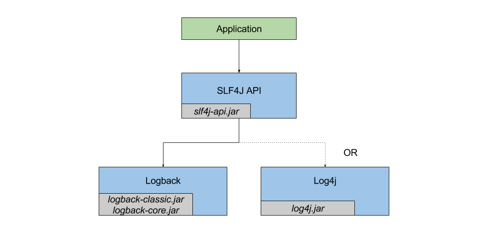
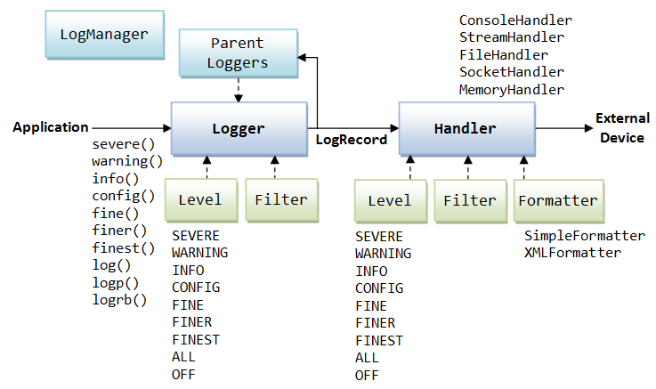
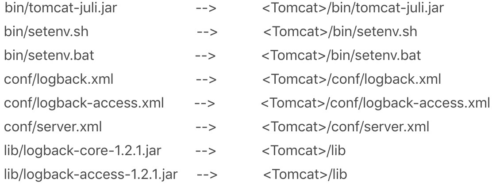

- 00 开篇词 Java程序员如何快速成长？.md.html
- 01 Web容器学习路径.md.html
- 02 HTTP协议必知必会.md.html
- 03 你应该知道的Servlet规范和Servlet容器.md.html
- 04 实战：纯手工打造和运行一个Servlet.md.html
- 05 Tomcat系统架构（上）： 连接器是如何设计的？.md.html
- 06 Tomcat系统架构（下）：聊聊多层容器的设计.md.html
- 07 Tomcat如何实现一键式启停？.md.html
- 08 Tomcat的“高层们”都负责做什么？.md.html
- 09 比较：Jetty架构特点之Connector组件.md.html
- 10 比较：Jetty架构特点之Handler组件.md.html
- 11 总结：从Tomcat和Jetty中提炼组件化设计规范.md.html
- 12 实战：优化并提高Tomcat启动速度.md.html
- 13 热点问题答疑（1）：如何学习源码？.md.html
- 14 NioEndpoint组件：Tomcat如何实现非阻塞I_O？.md.html
- 15 Nio2Endpoint组件：Tomcat如何实现异步I_O？.md.html
- 16 AprEndpoint组件：Tomcat APR提高I_O性能的秘密.md.html
- 17 Executor组件：Tomcat如何扩展Java线程池？.md.html
- 18 新特性：Tomcat如何支持WebSocket？.md.html
- 19 比较：Jetty的线程策略EatWhatYouKill.md.html
- 20 总结：Tomcat和Jetty中的对象池技术.md.html
- 21 总结：Tomcat和Jetty的高性能、高并发之道.md.html
- 22 热点问题答疑（2）：内核如何阻塞与唤醒进程？.md.html
- 23 Host容器：Tomcat如何实现热部署和热加载？.md.html
- 24 Context容器（上）：Tomcat如何打破双亲委托机制？.md.html
- 25 Context容器（中）：Tomcat如何隔离Web应用？.md.html
- 26 Context容器（下）：Tomcat如何实现Servlet规范？.md.html
- 27 新特性：Tomcat如何支持异步Servlet？.md.html
- 28 新特性：Spring Boot如何使用内嵌式的Tomcat和Jetty？.md.html
- 29 比较：Jetty如何实现具有上下文信息的责任链？.md.html
- 30 热点问题答疑（3）：Spring框架中的设计模式.md.html
- 31 Logger组件：Tomcat的日志框架及实战.md.html
- 32 Manager组件：Tomcat的Session管理机制解析.md.html
- 33 Cluster组件：Tomcat的集群通信原理.md.html
- 34 JVM GC原理及调优的基本思路.md.html
- 35 如何监控Tomcat的性能？.md.html
- 36 Tomcat I_O和线程池的并发调优.md.html
- 37 Tomcat内存溢出的原因分析及调优.md.html
- 38 Tomcat拒绝连接原因分析及网络优化.md.html
- 39 Tomcat进程占用CPU过高怎么办？.md.html
- 40 谈谈Jetty性能调优的思路.md.html
- 41 热点问题答疑（4）： Tomcat和Jetty有哪些不同？.md.html
- 特别放送 如何持续保持对学习的兴趣？.md.html
- 结束语 静下心来，品味经典.md.html
- 捐赠
31 Logger组件：Tomcat的日志框架及实战
每一个系统都有一些通用的模块，比如日志模块、异常处理模块、工具类等，对于Tomcat来说，比较重要的通用模块有日志、Session管理和集群管理。从今天开始我会分三期来介绍通用模块，今天这一期先来讲日志模块。
日志模块作为一个通用的功能，在系统里通常会使用第三方的日志框架。Java的日志框架有很多，比如：JUL（Java Util Logging）、Log4j、Logback、Log4j2、Tinylog等。除此之外，还有JCL（Apache Commons Logging）和SLF4J这样的“门面日志”。下面是SLF4J与日志框架Logback、Log4j的关系图：

我先来解释一下什么是“门面日志”。“门面日志”利用了设计模式中的门面模式思想，对外提供一套通用的日志记录的API，而不提供具体的日志输出服务，如果要实现日志输出，需要集成其他的日志框架，比如Log4j、Logback、Log4j2等。
这种门面模式的好处在于，记录日志的API和日志输出的服务分离开，代码里面只需要关注记录日志的API，通过SLF4J指定的接口记录日志；而日志输出通过引入JAR包的方式即可指定其他的日志框架。当我们需要改变系统的日志输出服务时，不用修改代码，只需要改变引入日志输出框架JAR包。
今天我们就来看看Tomcat的日志模块是如何实现的。默认情况下，Tomcat使用自身的JULI作为Tomcat内部的日志处理系统。JULI的日志门面采用了JCL；而JULI的具体实现是构建在Java原生的日志系统java.util.logging之上的，所以在看JULI的日志系统之前，我先简单介绍一下Java的日志系统。
Java日志系统
Java的日志包在java.util.logging路径下，包含了几个比较重要的组件，我们通过一张图来理解一下：

从图上我们看到这样几个重要的组件：
- Logger：用来记录日志的类。
- Handler：规定了日志的输出方式，如控制台输出、写入文件。
- Level：定义了日志的不同等级。
- Formatter：将日志信息格式化，比如纯文本、XML。
我们可以通过下面的代码来使用这些组件：
public static void main(String[] args) {
Logger logger = Logger.getLogger("com.mycompany.myapp");
logger.setLevel(Level.FINE);
logger.setUseParentHandlers(false);
Handler hd = new ConsoleHandler();
hd.setLevel(Level.FINE);
logger.addHandler(hd);
logger.info("start log");
}
JULI
JULI对日志的处理方式与Java自带的基本一致，但是Tomcat中可以包含多个应用，而每个应用的日志系统应该相互独立。Java的原生日志系统是每个JVM有一份日志的配置文件，这不符合Tomcat多应用的场景，所以JULI重新实现了一些日志接口。
DirectJDKLog
Log的基础实现类是DirectJDKLog，这个类相对简单，就包装了一下Java的Logger类。但是它也在原来的基础上进行了一些修改，比如修改默认的格式化方式。
LogFactory
Log使用了工厂模式来向外提供实例，LogFactory是一个单例，可以通过SeviceLoader为Log提供自定义的实现版本，如果没有配置，就默认使用DirectJDKLog。
private LogFactory() {
// 通过ServiceLoader尝试加载Log的实现类
ServiceLoader<Log> logLoader = ServiceLoader.load(Log.class);
Constructor<? extends Log> m=null;
for (Log log: logLoader) {
Class<? extends Log> c=log.getClass();
try {
m=c.getConstructor(String.class);
break;
}
catch (NoSuchMethodException | SecurityException e) {
throw new Error(e);
}
}
//如何没有定义Log的实现类，discoveredLogConstructor为null
discoveredLogConstructor = m;
}
下面的代码是LogFactory的getInstance方法：
public Log getInstance(String name) throws LogConfigurationException {
//如果discoveredLogConstructor为null，也就没有定义Log类，默认用DirectJDKLog
if (discoveredLogConstructor == null) {
return DirectJDKLog.getInstance(name);
}
try {
return discoveredLogConstructor.newInstance(name);
} catch (ReflectiveOperationException | IllegalArgumentException e) {
throw new LogConfigurationException(e);
}
}
Handler
在JULI中就自定义了两个Handler：FileHandler和AsyncFileHandler。FileHandler可以简单地理解为一个在特定位置写文件的工具类，有一些写操作常用的方法，如open、write(publish)、close、flush等，使用了读写锁。其中的日志信息通过Formatter来格式化。
AsyncFileHandler继承自FileHandler，实现了异步的写操作。其中缓存存储是通过阻塞双端队列LinkedBlockingDeque来实现的。当应用要通过这个Handler来记录一条消息时，消息会先被存储到队列中，而在后台会有一个专门的线程来处理队列中的消息，取出的消息会通过父类的publish方法写入相应文件内。这样就可以在大量日志需要写入的时候起到缓冲作用，防止都阻塞在写日志这个动作上。需要注意的是，我们可以为阻塞双端队列设置不同的模式，在不同模式下，对新进入的消息有不同的处理方式，有些模式下会直接丢弃一些日志：
OVERFLOW_DROP_LAST：丢弃栈顶的元素
OVERFLOW_DROP_FIRSH：丢弃栈底的元素
OVERFLOW_DROP_FLUSH：等待一定时间并重试，不会丢失元素
OVERFLOW_DROP_CURRENT：丢弃放入的元素
Formatter
Formatter通过一个format方法将日志记录LogRecord转化成格式化的字符串，JULI提供了三个新的Formatter。
- OnlineFormatter：基本与Java自带的SimpleFormatter格式相同，不过把所有内容都写到了一行中。
- VerbatimFormatter：只记录了日志信息，没有任何额外的信息。
- JdkLoggerFormatter：格式化了一个轻量级的日志信息。
日志配置
Tomcat的日志配置文件为Tomcat文件夹下conf/logging.properties。我来拆解一下这个配置文件，首先可以看到各种Handler的配置：
handlers = 1catalina.org.apache.juli.AsyncFileHandler, 2localhost.org.apache.juli.AsyncFileHandler, 3manager.org.apache.juli.AsyncFileHandler, 4host-manager.org.apache.juli.AsyncFileHandler, java.util.logging.ConsoleHandler
.handlers = 1catalina.org.apache.juli.AsyncFileHandler, java.util.logging.ConsoleHandler
以1catalina.org.apache.juli.AsyncFileHandler为例，数字是为了区分同一个类的不同实例；catalina、localhost、manager和host-manager是Tomcat用来区分不同系统日志的标志；后面的字符串表示了Handler具体类型，如果要添加Tomcat服务器的自定义Handler，需要在字符串里添加。
接下来是每个Handler设置日志等级、目录和文件前缀，自定义的Handler也要在这里配置详细信息:
1catalina.org.apache.juli.AsyncFileHandler.level = FINE
1catalina.org.apache.juli.AsyncFileHandler.directory = ${catalina.base}/logs
1catalina.org.apache.juli.AsyncFileHandler.prefix = catalina.
1catalina.org.apache.juli.AsyncFileHandler.maxDays = 90
1catalina.org.apache.juli.AsyncFileHandler.encoding = UTF-8
Tomcat + SLF4J + Logback
在今天文章开头我提到，SLF4J和JCL都是日志门面，那它们有什么区别呢？它们的区别主要体现在日志服务类的绑定机制上。JCL采用运行时动态绑定的机制，在运行时动态寻找和加载日志框架实现。
SLF4J日志输出服务绑定则相对简单很多，在编译时就静态绑定日志框架，只需要提前引入需要的日志框架。另外Logback可以说Log4j的进化版，在性能和可用性方面都有所提升。你可以参考官网上这篇文章来了解Logback的优势。
基于此我们来实战一下如何将Tomcat默认的日志框架切换成为“SLF4J + Logback”。具体的步骤是：
1.根据你的Tomcat版本，从这里下载所需要文件。解压后你会看到一个类似于Tomcat目录结构的文件夹。- 2.替换或拷贝下列这些文件到Tomcat的安装目录：

3.删除<Tomcat>/conf/logging.properties-
4.启动Tomcat
本期精华
今天我们谈了日志框架与日志门面的区别，以及Tomcat的日志模块是如何实现的。默认情况下，Tomcat的日志模板叫作JULI，JULI的日志门面采用了JCL，而具体实现是基于Java默认的日志框架Java Util Logging，Tomcat在Java Util Logging基础上进行了改造，使得它自身的日志框架不会影响Web应用，并且可以分模板配置日志的输出文件和格式。最后我分享了如何将Tomcat的日志模块切换到时下流行的“SLF4J + Logback”，希望对你有所帮助。
课后思考
Tomcat独立部署时，各种日志都输出到了相应的日志文件，假如Spring Boot以内嵌式的方式运行Tomcat，这种情况下Tomcat的日志都输出到哪里去了？
不知道今天的内容你消化得如何？如果还有疑问，请大胆的在留言区提问，也欢迎你把你的课后思考和心得记录下来，与我和其他同学一起讨论。如果你觉得今天有所收获，欢迎你把它分享给你的朋友。
© 2019 - 2023 Liangliang Lee. Powered by gin and hexo-theme-book.